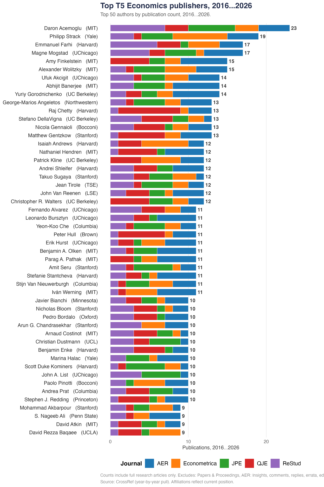
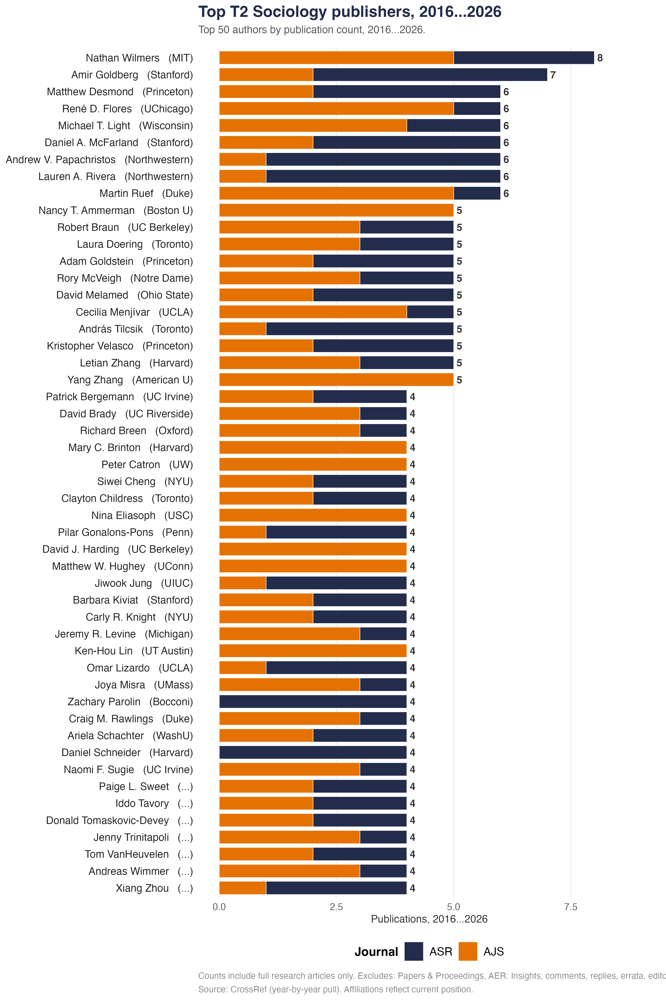

Interactive charts of the top authors by publication count in the leading field journals. Hover over any bar for author details. Scroll down for the full list of 100 authors.


Counts include full research articles only. Excludes: Papers & Proceedings, AER: Insights,
comments, replies, errata, editorial essays, and obituaries.
Source: CrossRef (year-by-year pull). Affiliations reflect current position.
Data compiled by John Holbein (UVA Batten School), May 2026.